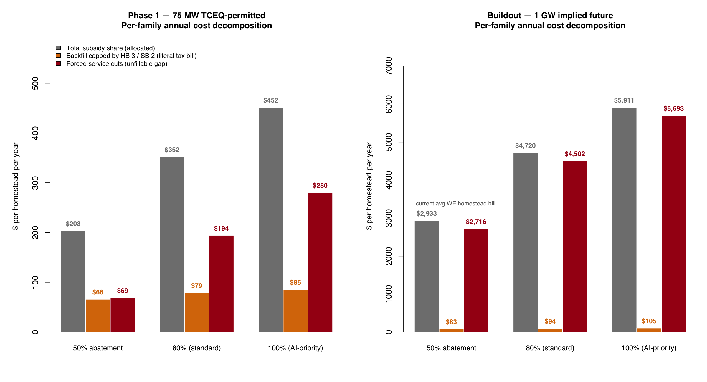

Black Mountain Power LLC
and what it will cost Parker
What we know, what it will cost, and what this court can do.
What just happened
Parker County Appraisal District, May 15, 2026
The CAD issued corrected notices on all 18 parcels owned by Black Mountain Power LLC at 501 Pearson Ranch Road.
The notices removed the agricultural exemption. The parcels are no longer being valued as ranchland, because they are no longer being used as ranchland.
This is the appraisal district officially recognizing that the conversion has begun.
The site
501 Pearson Ranch Road, off FM 730 (Azle Highway)
- 18 parcels · 2,075.28 acres assembled under Black Mountain Power LLC
- Weatherford ISD, Parker County, Hospital District, Junior College District, ESD-1, Lateral Road
- Removed from Weatherford's ETJ — petitioned out, so the city has no land-use authority
- Inside the Lake Weatherford watershed — the city's drinking-water source
- ~2 miles from northern City of Willow Park boundary
- ~1 mile from a proposed $1.5 billion equine development the city has been planning for four years
Land value
Earlier transactions
2025-2026: further parcels assembled under the same operator
2026-05-15: ag exemption stripped from all 18 parcels
The owner
One operator, multiple LLCs, one office
Rhett M. Bennett is the registered agent for every Black Mountain entity and a named member of Fort Worth Power Core LLC. All four entities operate from 425 Houston Street, Suite 400, Fort Worth, TX 76102.
The structure separates the land arm from the power arm. The land arm holds the parcels. The power arm holds the TCEQ air permits and operates the gas turbines.
— Chris Strayer, Parker County EDC Director, on the record at the May 26 commissioners court session
| Entity | TX SOS file | Formed |
|---|---|---|
| Black Mountain Land Company LP | 0801708440 | 2012-12-28 |
| Black Mountain Royalty LP | — | (earlier) |
| Black Mountain Power LLC land arm | 0805989692 | 2025-04-11 |
| Fort Worth Power Core LLC power arm | 0805493020 | 2024-04-03 |
Registered agent for all entities: Rhett M. Bennett · Registered agent for the power-arm legal filings: Stubbeman McRae Sealy Laughlin & Browder (Midland TX, Permian Basin energy counsel).
The statewide pattern
Fort Worth Power Core LLC: 14 sites, 11 counties

Parker is one of fourteen. The pattern is systematic:
- All 14 sites named "[County] Power Plant" — cookie-cutter
- Three Siemens SGT-800 turbines in Tarrant (~50 MW class each)
- Hill, Hood, and Hays — the counties resisting — are conspicuously absent
- Somervell (immediately west of Hood) is in the network — possibly displaced demand
- Williamson (Jonah TX, near Georgetown) has no active opposition yet
↗ Show the interactive map — toggle the "Fort Worth Power Core network" layer to see each site.
The TCEQ permit
75 megawatts · 5 gas turbines · 24/7 continuous operation
| TCEQ regulated entity | RN112172408 "PARKER PLANT" |
| Permit number | Air New Source Registration #179422 |
| Permit type | Standard Permit / Permit-by-Rule fast-track |
| Status | ACTIVE |
| Holder | Fort Worth Power Core LLC |
| Approval timeline | 2.5 weeks (vs ~9 months for the City of Weatherford's recent wastewater permit) |
| Public-notice process | None |
| Operating hours | Continuous (24/7) |
What "Standard Permit" means
TCEQ has two air-permit paths:
- New Source Review (NSR): full technical analysis, 30-day public notice, contested-case hearing available. Takes 6–18 months.
- Standard Permit / Permit-by-Rule: pre-approved authorization templates. Minimal or no public notice. Takes days to weeks.
The fast-track is legal. But it means the public did not have the opportunity to comment, request a contested-case hearing, or examine the emissions inventory.
"That permit was approved without any type of public process, which to us was kind of shocking."
— James Hotopp, Weatherford City Manager, May 26, 2026
Cost to families — Phase 1
If the 80% Chapter 312 abatement is granted on what's already permitted

Phase 1 is the 75-MW gas-plant + accompanying data-center capacity TCEQ has already permitted.
If Parker County and Weatherford ISD grant the standard 80% Chapter 312 abatement:
Cost to families — Buildout
What the 2,075-acre footprint actually supports

The Weatherford City Manager testified that 75 MW "would not be enough for the ultimate buildout for what they're talking about on this particular site."
2,075 acres can host a 1-gigawatt campus comfortably. At 1 GW with the standard 80% abatement:
For context: that's 140% of the current average Weatherford homestead tax bill, every year.
Why it's worse than it sounds
State law forces most of this to land as service cuts

The Texas Legislature passed two laws in 2019 that cap how fast local jurisdictions can raise tax rates:
- HB 3 — caps ISD revenue growth without a Voter-Approval election
- SB 2 — caps county / special-district rates at 3.5% revenue growth without an election
At Buildout 80% abatement, of the $4,720 in foregone revenue per family per year:
95%+ of the cost becomes service cuts — schools, county roads, hospital district, ESD response — not a rate hike. The state law makes that math automatic.
Why Black Mountain chose Parker
The siting-risk surface tells the developer's story

The siting-risk index combines:
- Available rural land (low cropland share)
- Regulatory permissiveness (GCD, PGMA, moratorium status)
- Proximity to existing data-center / grid infrastructure
Parker's current rank: 237 of 254 Texas counties.
Our regulations and Hill's moratorium have measurably lowered Parker's score. But the regional clustering still made us attractive. The developer's calculation was: worth the local political fight here, vs. siting somewhere with less infrastructure.
Hill County (after passing the moratorium): rank 191. Hood: rank 245. Hays: rank 252. Without the regulations, Parker would be near the top quartile.
What other counties are doing
And what's already happened to them
Hood County, TX
Considered a data-center moratorium in early 2026.
State Senator Paul Bettencourt sent a letter to the Texas Attorney General — explicitly in response to Hood's consideration — alleging counties have no statutory authority. Hood subsequently denied a plat on local planning grounds. Now in litigation.
Fort Worth Power Core has not pursued Hood, but has a site one county west in Somervell (Glen Rose).
Hill County, TX
Went further than Hood: actually passed the moratorium. Hired outside counsel.
Faces the same legal posture from the State — threatened litigation under the Bettencourt position. Also facing litigation from the data-center developer directly.
Other moratoriums (May 2026)
City of Harlingen, TX (May 25, 2026)
Tulsa OK · Denver CO
"Several places in California, Ohio, Wisconsin, North Carolina"
— Sid Miller, TX Ag Commissioner, May 26 testimony
The pattern is national: cities and counties moving to pause or block data-center siting while state regulations catch up. Texas is at the front edge of the conflict because of the AI buildout pressure.
Texas counties operate under the Dillon Rule: limited statutory authority, no home-rule. The county cannot regulate land use directly. But the court has full statutory authority over tax-abatement decisions.
What this court CAN do
Statutory authority — within Dillon Rule limits
What the court CAN do
- Refuse a Chapter 312 abatement — fully within the court's authority
- Refuse a Chapter 381 agreement — same
- Adopt a formal policy declining incentives for data-center projects above a threshold size or absent specified conditions
- Direct the EDC to decline data-center incentive task forces
- Issue a non-binding resolution articulating the court's policy
- File TPIA requests for the TCEQ permit file
- Coordinate with the 13 other counties Fort Worth Power Core has sited in
What the court CANNOT do
- Block Black Mountain from building on private land (Dillon Rule)
- Override TCEQ permitting
- Override ERCOT interconnection
- Pass an enforceable land-use moratorium (Hill County is finding out the legal cost)
- Set city zoning rules (only the cities can; Weatherford has already banned data centers within city limits)
The political lever for residents is the abatement vote. That vote is fully discretionary. Black Mountain has not yet filed for an abatement — but they will. The window to set policy is now.
The ask
Five specific actions the court can take June 8
See for yourself
Interactive map — every county, every layer, every source
- Toggle the RCO surface — where data-center resource competition is most intense in Texas
- Toggle the MW concentration — where the operating fleet sits today
- Toggle the Fort Worth Power Core network — the 14-site rollout
- Toggle GCD coverage — where groundwater regulation exists
- Click any county for source-cited detail
Open the map:
viz/tx_rco_interactive.html
A single self-contained HTML file. Works offline. Share it.
What it answers
- How does Parker compare to Hill, Hood, Hays?
- Where is the rest of the Fort Worth Power Core network?
- Which counties have GCDs and which don't?
- How much operating capacity does each county already have?
All source data on GitHub: github.com/Parker-Data-Pro-Populo/data-center-surface-datarun
Sources and methodology
Every number in this deck traces to a public record
Data sources
- Parker County Appraisal District — May-15-2026 corrected notices (18 parcels)
- pg01.parker_property — Parker CAD certified roll, tax rates, parcel ownership
- TCEQ Central Registry — Regulated Entity + Customer search, pulled 2026-06-01
- TX Comptroller franchise-tax registry — pulled 2026-06-01
- TX Comptroller Chapter 312 / JETI registries — pulled 2026-06-01 (Black Mountain: no filings)
- TWDB Nov-2019 GCD shapefile — 101 districts, 254 counties, spatial join
- USDA NASS Census of Agriculture 2022 — cropland share
- TX Comptroller Registered Qualifying Data Centers — operating fleet
- Parker County Commissioners Court — May-26-2026 session transcript
Methodology
The cost model takes the actual taxable improvements (data-center capex + gas turbines at $8M/MW · 85% taxable share), applies the Chapter 312 abatement rate, and allocates the foregone revenue across Weatherford ISD households (15,902) and Parker County households (46,404) by jurisdiction share.
The HB 3 / SB 2 ceiling cap models the legally backfillable rate increase as a fraction of the foregone amount; the residual is treated as forced service cuts.
The siting-risk index is a weighted composite: 0.35·land × 0.35·permissive × 0.30·infrastructure proximity, normalized to [0,1] across 254 counties.
Full code, data, and reproducibility:
github.com/Parker-Data-Pro-Populo/data-center-surface-datarun
Questions?
If you have questions, dispute a number, or want a deeper dive on the methodology, raise your hand.
Every figure has a source. If a source is wrong, I want to know. If the math is wrong, I want to know.
For follow-up:
Henry Lee Butler
henry.lee@henrylee.vote
github.com/Parker-Data-Pro-Populo/data-center-surface-datarun
What you can do
senate.texas.gov/member.php?d=10Sen. Brent Hagenbach · TX Senate District 30 ·
senate.texas.gov/member.php?d=30Rep. Mike Olcott · TX House District 60 · district office: 212 Santa Fe Dr., Weatherford ·
house.texas.gov/members/member-page/?district=60